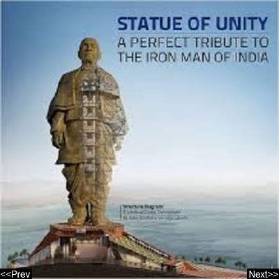

|  | |
|
Statue of Unity The Statue of Unity is a planned 182 metres monument of Vallabhbhai Patel that will be created directly facing the Narmada Dam, 3.2 km away on the river island called Sadhu Bet near Vadodara in Gujarat. It would be the world's tallest statue. Created: October 31, 2013 Architect:Joseph Menna | |